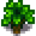
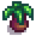
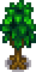
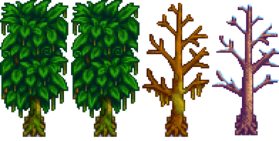
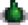

Arbres
- Cet article concerne les arbres non fruitiers. Pour les arbres fruitiers, voir la page Arbres fruitiers.
Les Arbres non fruitiers se présentent en deux types : communs et spéciaux. Les arbres communs (Érable, Chêne, Pin et Acajou) sont des sources de matière première renouvelable dont le Bois utile pour de nombreuses recette de fabrication ou pour la Scierie, et les sèves (Sève, Sirop d'érable, Résine de chêne et Goudron de pin). Les arbres spéciaux on leurs propres caractéristiques, uniques.
Arbres communs
Récolter
Un arbre mature (étape 5) peut être secoué pour récolter une graine (voir Cycle de croissance), extrait pour sa sève ou abattu en le frappant avec une Hache. Lorsque abattu, un arbre tombe toujours à droite ou à gauche en opposition avec la position du joueur (si possible), et produit du bois et des graines là où il touche le sol. Lorsque coupé depuis le bas ou le haut, le joueur devrait essayer de se décaler légèrement du centre de la tuile pour s'assurer de la direction de chute. Si l'arbre est adjacent à un mur, il faudrait longer le mur pour s'assurer de le faire tomber dans l'espace de jeu accessible. Si l'arbre tombe dans ou près d'un point d'eau, les objets lâchés peuvent s'y perdre. Un Magnétisme élevé est très utile pour collecter rapidement ces ressources. Ces ressources sont (sans compter celles des souches) : :[1]
 Bois (12-16), sauf les Acajous. Les 4 unités de bois additionnelles sont ajoutées aléatoirement, basées sur la Chance et le niveau de Cueillette. Pour les joueurs avec la profession Forestier, la quantité est 25% plus grande (c'est-à-dire, 15-20 unités). Si le joueur a lu Le secret de Woody, il y a 5% de chance de doubler la quantité de bois obtenue (c'est-à-dire 24-32 unités, ou 30-40 unités avec la profession).
Bois (12-16), sauf les Acajous. Les 4 unités de bois additionnelles sont ajoutées aléatoirement, basées sur la Chance et le niveau de Cueillette. Pour les joueurs avec la profession Forestier, la quantité est 25% plus grande (c'est-à-dire, 15-20 unités). Si le joueur a lu Le secret de Woody, il y a 5% de chance de doubler la quantité de bois obtenue (c'est-à-dire 24-32 unités, ou 30-40 unités avec la profession). Bois dur (10) pour les Acajous. Pour les joueurs avec la profession Forestier, la quantité est 25% plus grande (c'est-à-dire 12 ou 13 unités).
Bois dur (10) pour les Acajous. Pour les joueurs avec la profession Forestier, la quantité est 25% plus grande (c'est-à-dire 12 ou 13 unités). Sève (5)
Sève (5) Graine d'érable (0-2),
Graine d'érable (0-2),  Gland (0-2),
Gland (0-2),  Pomme de pin (0-2) ou
Pomme de pin (0-2) ou  Graine d'acajou (0-1), dépendant du type d'arbre, en addition de la possible Graine "lâche" qui peut tomber en secouant l'arbre. Toutes les graines sont possibles à obtenir au niveau 1+ de Cueillette.
Graine d'acajou (0-1), dépendant du type d'arbre, en addition de la possible Graine "lâche" qui peut tomber en secouant l'arbre. Toutes les graines sont possibles à obtenir au niveau 1+ de Cueillette.- Bois dur, si le joueur a la profession Bûcheron. La quantité de bois est aléatoire: 50% de chance pour 0 unités; 25% 1; 12.5% 2; 6.25% 3; 3.125% 4; etc. (sans nombre maximum fixé).
- 12 points d'expérience de Cueillette.
Lorsque extrait, un arbre ne peut ni être secoué ni être abattu, à moins que le joueur retire le Saigneur. Mais si l'arbre est recouvert de mousse, il peut être secoué pour la récupérer, avec une faux ou une arme, sans enlever le saigneur.
Une souche reste lorsqu'un arbre est abattu. Retirer la souche avec une Hache donne :[2]
- Bois (4-9)
- En solo, le minimum est 5, plus 4 unités bonus ajoutées aléatoirement, basées sur la Chance et la compétence de Cueillette. Pour la profession Forestier, la quantité totale est de 6-11 unités de bois.
- En multijoueur, la quantité est fixée à 4 unités (5 pour les Forestiers).
- Sève (1)
- 1 point d'expérience de Cueillette
A l'étape 4, les pousses peuvent être coupée à la Hache. Le rendement est :[3]
- Bois (4) (5 pour les Forestiers)
A l'étape 2 et 3, les pousses peuvent être retirées à la Hache, |Pioche, Faux ou avec une Arme. Si elle est retirée autrement qu'à la hache, elle ne donnera rien. [4]
- Bois (1) peut être obtenu si une Hache est utilisée. Le pourcentage de chance est égal à 10x le niveau de cueillette du joueur (donc garanti au niveau 10), incluant les Buffs.
A l'étape 1, les graines d'arbre peuvent être retirées du sol à l'aide d'une Hache, Houe ou Pioche. Le seul butin est la graine.
Mousse
La Mousse peut se développer sur les Érables, Chênes, Pins, et deux types d'Arbres de la pluie verte, durant toutes les saisons sauf en Hiver. Elle recouvre la plupart des arbres durant l'événement de la pluie verte. Les arbres n'ont pas besoin d'être coupés pour récolter la Mousse, elle peut être obtenue avec n'importe quel outil. Chaque arbre produit 1-2 unités de Mousse.
Cycle de croissance
Chaque jour, il y a 5% de chance qu'un arbre mature génère une graine lâche. Cette graine tombera si le joueur secoue l'arbre. Normalement cette graine correspond au type de l'arbre d'où elle provient, avec une exception : les deux dernières semaines d'Automne, secouer un érable produit une Noisette au lieu d'une Graine d'érable.[5] Notez que le Niveau 1 de cueillette doit être atteint, et que le joueur doit avoir passé la nuit et vu l'écran de progression de niveau avant que les graines d'arbres ne puissent être obtenues en les coupant. Les graines lâches peuvent être obtenues dès que le joueur a atteint le niveau 1.
De plus, les arbres matures (incluant les souches) de la ferme ont 15% de chance chaque nuit d'essayer de planter une graine dans le sol.[6] Une tuile est choisie aléatoirement, jusqu'à 3 tuiles autour de l'arbre mature dans toutes les directions. La graine est donc plantée, créant un nouvel arbre d'étape 1, seulement si la tuile est un emplacement valide pour une nouvelle pousse. Cette tuile doit être vide, les arbres ne détruisent pas les récoltes ou les chemins.
Les graines plantées grandissent à travers 4 étapes avant d'atteindre la maturité. Les graines d'arbres n'ont pas besoin d'être arrosées, et ne demandent pas non plus d'être entourées d'emplacements libres (contrairement aux Arbres fruitiers) : l'endroit peut être pavé, les arbres peuvent être plantés à côté d'eau ou d'autres éléments. Du moment que la graine peut être plantée dans le sol, elle peut grandir. La seule limite est que deux arbres matures ne peuvent pas se trouver côte à côte : une pousse ne grandira pas au dessus de l'étape 4 si un arbre mature se trouve dans une des 8 tuiles adjacentes.
Avec de l'Engrais pour arbres, les arbre grandissent d'une étape chaque nuit, sauf pour l'étape 4 qui prend deux jours. Au total, une graine d'arbre fertilisée prend 5 jours pour atteindre la maturité. Les pousses fertilisées grandiront même en Hiver, autrement les arbres ne poussent pas du tout dans cette saison.
Sans engrais, les pousses ont 20% de chance chaque nuit de grandir à l'étape suivante, sauf pour l'étape 4 qui prend deux fois plus longtemps. La moyenne pour qu'un arbre atteigne la maturité est de 24 jours, même si cas par cas cette durée change considérablement. Statistiquement, 90% des graines devraient atteindre la maturité en 38 jours (hors Hiver), et 99% en 55 jours.
Après avoir atteint la maturité à l'étape 5, l'arbre continue de pousser jusqu'à l'étape 15, avec une chance de base de 20% pour que de la Mousse se développe dessus. De plus, si un arbre possède à côté de lui un Arbre de la pluie verte (Type 1 ou 2), dans une zone de 5x5 autour, il aura une chance de pousse additionnelle de 50% après l'étape 5. [7].
Collecter la Mousse réduit le niveau de croissance à l'étape 12 - nombre de mousse récoltée. [8].
Hors de la Ferme
Les arbres communs de la Forêt Sève-Cendreuse, Montagne, Voie ferrée, Carrière, de l'Arrêt de bus et de la Forêt inexploitée peuvent être abattus, extraits, ou secoués. Le joueur ne peut cependant pas interagir avec les arbres de Pélican Ville.
Hors de la ferme, les arbres ne plantent pas de graines par eux-mêmes. Cependant, le joueur peut planter des graines dans les tuiles exploitables, qui pousseront alors normalement.
Les arbres déjà existants qui sont abattus hors de la ferme, et leur souche retirée, ont 20% de chance par nuit de réapparaître à l'étape 3 de leur croissance (même en hiver). Après leur réapparition, ils grandiront normalement jusqu'à leur maturité. Si la souche n'est pas retirée, l'arbre ne peut pas réapparaître.
Foudre
Contrairement aux Arbres fruitiers, produisant du Charbon durant 3- 4 jours après avoir été frappés par la foudre, les arbres communs, eux, sont détruits. Ils ne laissent qu'une souche (et un peu de bois et sève) derrière eux.
Érable
Les Érables poussent depuis une  Graine d'érable. Lorsque Extraits, ils produisent du
Graine d'érable. Lorsque Extraits, ils produisent du  Sirop d'érable tous les 9 jours (4 jours avec un Récolteur lourd). Les érables ont une chance de lâcher une Noisette durant les deux dernières semaines d'Automne.
Sirop d'érable tous les 9 jours (4 jours avec un Récolteur lourd). Les érables ont une chance de lâcher une Noisette durant les deux dernières semaines d'Automne.
Le Sirop d'érable est le plus profitable des trois types d'extractions d'arbre.
| Étape 1 | Étape 2 | Étape 3 | Étape 4 | Étape 5 - Printemps, Été, Automne, Hiver | Souche - Printemps, Été, Automne, Hiver |
|---|---|---|---|---|---|
 |
 |
Chêne
Les Chênes poussent depuis un  Gland. Lorsque Extraits, ils produisent de la
Gland. Lorsque Extraits, ils produisent de la  Résine de chêne tous les 7 jours (3 jours avec un Récolteur lourd).
Résine de chêne tous les 7 jours (3 jours avec un Récolteur lourd).
| Étape 1 | Étape 2 | Étape 3 | Étape 4 | Étape 5 - Printemps, Été, Automne, Hiver | Souche - Printemps, Été, Automne, Hiver |
|---|---|---|---|---|---|
 |
Pin
Les Pins poussent depuis une  Pomme de pin. Lorsque Extraits, ils produisent du
Pomme de pin. Lorsque Extraits, ils produisent du  Goudron de pin tous les 5 jours (2 jours avec un Récolteur lourd).
Goudron de pin tous les 5 jours (2 jours avec un Récolteur lourd).
| Étape 1 | Étape 2 | Étape 3 | Étape 4 | Étape 5 - Printemps, Été, Automne, Hiver | Souche - Printemps, Été, Automne, Hiver |
|---|---|---|---|---|---|
 |
Acajou
Les Acajous poussent depuis une  Graine d'acajou. Lorsque Extraits, ils produisent de la
Graine d'acajou. Lorsque Extraits, ils produisent de la  Sève tous les jours, avec à la fois le Saigneur et le Récolteur lourd.
Sève tous les jours, avec à la fois le Saigneur et le Récolteur lourd.
| Étape 1 | Étape 2 | Étape 3 | Étape 4 | Étape 5 - Printemps, Été, Automne, Hiver | Souche - Printemps, Été, Automne, Hiver |
|---|---|---|---|---|---|
 |
|
Arbres spéciaux
Les arbres spéciaux ont des caractéristiques et rendements particuliers.
Palmier
Les Palmiers sont présents uniquement dans le Désert de Calico et sur l'Île Gingembre. Ils ne lâchent pas de graines, donc le joueur ne peut pas en planter ailleurs. Ils peuvent occasionnellement lâcher une Noix de coco lorsque abattus ou secoués (parfois il s'agit d'une Noix de coco dorée si l'arbre est sur l'Île Gingembre). Ils ne peuvent pas être Extraits.
| Étape 1 | Étape 2 | Étape 3 - Desert / Île | Souche |
|---|---|---|---|
 |

|
Arbre champignon
Les Arbres champignons sont des arbres rares de la ferme. Chaque Automne, il y a une chance qu'un arbre (ou souche) commun mature et non extrait devienne un Arbre champignon (ou souche champignon) durant la nuit. Une  Graine d'arbre à champignon peut être plantée pour faire pousser un Arbre champignon. Ces graines ne tombent pas depuis ces arbres quand ils sont secoués ou abattus, elles sont disponibles soit via la propagation naturelle près des arbres champignons, soit via la Chambre des noix de Monsieur Qi. Ils produisent des Champignons rouges et des Champignons violets lorsque abattus. Ils peuvent être Extraits et donnent des champignons
Graine d'arbre à champignon peut être plantée pour faire pousser un Arbre champignon. Ces graines ne tombent pas depuis ces arbres quand ils sont secoués ou abattus, elles sont disponibles soit via la propagation naturelle près des arbres champignons, soit via la Chambre des noix de Monsieur Qi. Ils produisent des Champignons rouges et des Champignons violets lorsque abattus. Ils peuvent être Extraits et donnent des champignons  Commun,
Commun,  Rouge, ou
Rouge, ou  Violet au fil du temps.
Violet au fil du temps.
Les Arbres champignons frappés par la foudre sont réduits en souche et lâchent des champignons comme un arbre commun laisserait du bois ou de la sève. Si la souche est laissée là, l'arbre repoussera au Printemps suivant.
| Étape 1 | Étape 2 | Étape 3 | Étape 4 | Étape 5 | Souche |
|---|---|---|---|---|---|

|
Arbre mystique
Les Arbres mystiques poussent depuis des  Graines d'arbre mystique. Les arbres mystiques ne sont pas présents naturellement dans la vallée, ils ne pousseront que s'ils sont plantés par le joueur. Lorsque Extraits, ils produisent du
Graines d'arbre mystique. Les arbres mystiques ne sont pas présents naturellement dans la vallée, ils ne pousseront que s'ils sont plantés par le joueur. Lorsque Extraits, ils produisent du  Sirop mystique tous les 7 jours (3 jours avec un Récolteur lourd). Lorsqu'ils sont abattus avec une hache, ils produisent du Bois dur.
Sirop mystique tous les 7 jours (3 jours avec un Récolteur lourd). Lorsqu'ils sont abattus avec une hache, ils produisent du Bois dur.
| Étape 1 | Étape 2 | Étape 3 | Étape 4 | Étape 5 | Souche |
|---|---|---|---|---|---|
 |
Arbres de la pluie verte
Les Arbres de la pluie verte poussent depuis une Graine de mousse. Il existe 3 variétés d'arbres de la pluie verte, qui apparaissent d'eux-même durant l'événement de la pluie verte, ou en plantant des Graines de mousse. Lorsqu'ils sont secoués, ils peuvent lâcher une Graine de mousse. Lorsqu'ils sont abattus avec une hache, ils peuvent produire de la mousse, du bois, de la sève (et possiblement du Bois dur (si le joueur a la profession Bûcheron).
Type 1
Certains apparaissent recouverts de mousse, d'autres non. Ils ne peuvent pas être Extraits.
| Étape 1 | Étape 2 | Étape 3 | Étape 4 | Étape 5 - Printemps, Été, Automne, Hiver | Souche - Printemps, Été, Automne, Hiver |
|---|---|---|---|---|---|
 |
 |
Type 2
Certains apparaissent recouverts de mousse, d'autres non. Ils ne peuvent pas être Extraits.
| Étape 1 | Étape 2 | Étape 3 | Étape 4 | Étape 5 - Printemps, Été, Automne, Hiver | Souche - Printemps, Été, Automne, Hiver |
|---|---|---|---|---|---|
 |
Type 3
En les coupant avec une hache, ils produisent des Crosse de fougère. Lorsque extraits, ils produisent des  Crosse de fougère (1) tous les 2 jours (1 jour avec un Récolteur lourd).
Crosse de fougère (1) tous les 2 jours (1 jour avec un Récolteur lourd).
| Étape 1 | Étape 2 | Étape 3 | Étape 4 | Étape 5 - Printemps, Été, Automne, Hiver | Souche - Printemps, Été, Automne, Hiver |
|---|---|---|---|---|---|
 |
 |
Références
- ↑ Voir Tree::extraWoodCalculator et Tree::tickUpdate dans le code du jeu.
- ↑ Voir Tree::extraWoodCalculator et Tree::performTreeFall dans le code du jeu.
- ↑ Voir Tree::performBushDestroy dans le code du jeu.
- ↑ Voir Tree::performSproutDestroy dans le code du jeu.
- ↑ Voir Tree::shake and Tree::dayUpdate dans le code du jeu.
- ↑ Voir Tree::dayUpdate dans le code du jeu.
- ↑ Voir Tree::dayUpdate dans le code du jeu.
- ↑ Voir Tree::performToolAction dans le code du jeu.
Historique
- 1.1 : Il n'est plus possible d'extraire une souche.
- 1.3.27 : Détruire une souche d'arbre donne maintenant 1 point d'expérience de cueillette.
- 1.4 : Correction du bug faisant qu'une pousse d'étape 2 ou 3 produit le son d'une faux lorsque arrosée. Fixe le bug qui empêchait les arbres de lâcher des graines et faisant disparaître les graines récoltées si un niveau de cueillette était passé durant la journée. Planter des arbres hors de la ferme ne nécessite plus que le sol soit labouré (empêche de planter des arbres dans des emplacements normalement inexploitables lorsqu'un artefact y est creusé en Hiver.).
- 1.5 : Ajout de l'Acajou.
- 1.6 : Ajout de l'arbre mystique et des arbres de la pluie verte. Correction des souches qui donnaient des graines comme des arbres matures. Lire Le secret de Woody donne une chance de doubler la production de bois des arbres.
- 1.6.3 : Ajout des explications des cycles de croissance étendus.
| Arbres | |
|---|---|
| Arbres | Acajou • Arbre champignon • Arbre mystique • Arbres de la pluie verte • Chêne • Érable • Palmier • Pin |
| Arbres fruitiers | Abricotier • Bananier • Cerisier • Grenadier • Manguier • Oranger • Pêcher • Pommier |
| Graines | Gland • Graine d'acajou • Graine d'arbre à champignon • Graine d'arbre mystique • Graine d'érable • Graine de mousse • Pomme de pin |
| Fruit | Abricot • Banane • Cerise • Grenade • Mangue • Orange • Pêche • Pomme |
| Divers | Arbre champignon • Grande bûche • Grande souche • Théier |